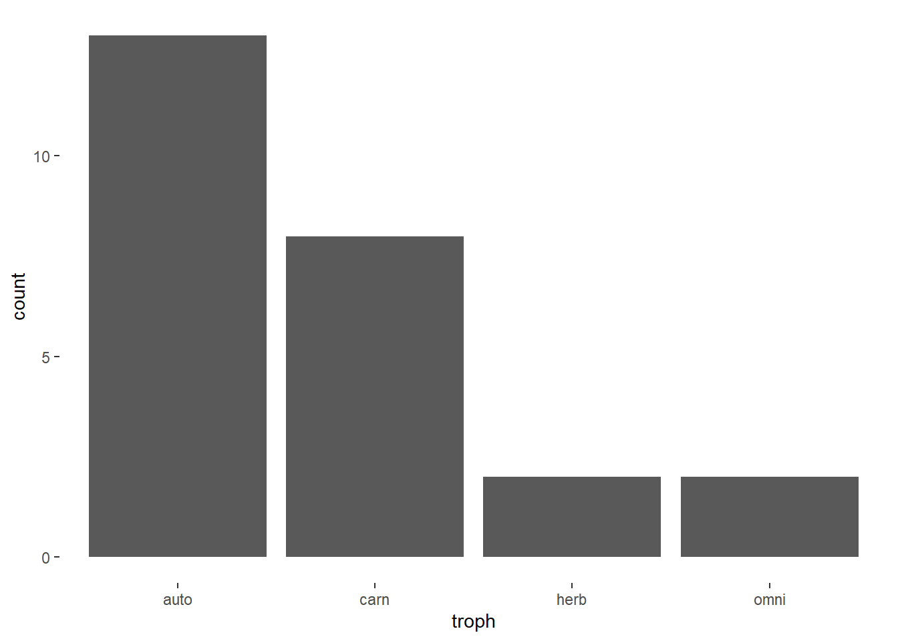
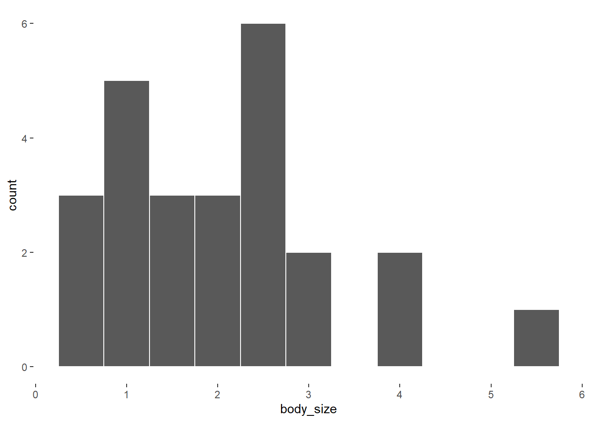

Food webs are representations of the feeding relationships between plants, animals, and other organisms in an ecosystem. Ecologists will often use network graphs and network analysis to describe and analyze these feeding relationships. A major goal of theoretical ecology is coming up with models that can be used describe empirical food webs. A good place to start this process is by simulating feeding relationships. Network science and computation can help us do this.
In this post, I develop a simulation of a food web based on body size and dietary strategy. My goal is to understand some of the structural implications that arise from these two drivers. This is a work in progress.
Species attributes
The first thing I’m going to do is generate some species attributes. These attributes includes things we might measure about species (e.g., body size) and categories we might place different species in (e.g., trophic level).
First, let’s imagine have 25 species from four different trophic levels: carnivore, omnivore, herbivore, and autotroph.
set.seed(777)
N = 25
trophs = c('carn','omni','herb','auto')We can sample with replacement from a vector of these trophic levels to assign each species to one of them. If we use the default prob in the sample function, each level is sampled with equal probability. This is something we might want to change to reflect empirical food webs. For example, there tend to be a lot of plants and carnivores, and relatively fewer omnivores and herbivores.

Next, we need to assign each species a body size. This is somewhat awkward to do for plants (autotrophs), so for simplicity, we’ll assume that plant body size refereces to the total edible biomass of that particular plant, on average.
Since body sizes are always positive, continuous values, I’ll use a gamma distribution.
body_size = rgamma(N, shape = 2)
So we have many species that are pretty small and some a bit larger. The units here are pretty arbitrary but maybe we think of them as hundreds of pounds.
Now I can store all of these in a data frame.
d = data.frame(
species = 1:N,
troph = sample( trophs, size = N, replace = TRUE, prob = c(0.3,0.1,0.1,0.5) ),
body_size = rgamma(N, shape = 2)
)
head(d) species troph body_size
1 1 auto 4.5290711
2 2 auto 0.5468126
3 3 carn 0.9878395
4 4 auto 1.5093469
5 5 auto 3.0427018
6 6 carn 1.4672133